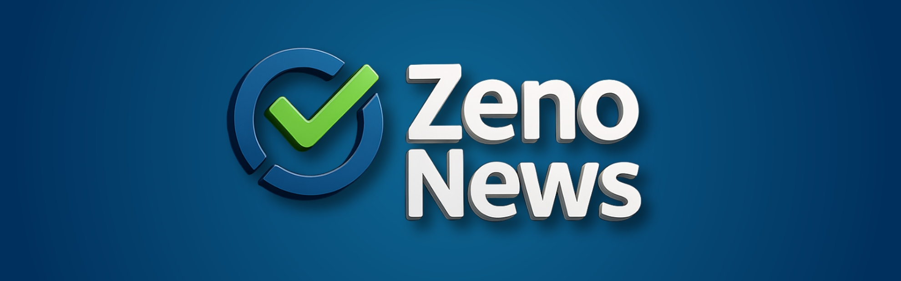

Novidade no Painel Zeno: CRLV-e Pernambuco já disponível
Publicado em: 23 de agosto de 2025
A ZenoBrasil acaba de anunciar mais uma novidade no seu painel de consultas: agora os usuários já podem acessar o CRLV-e (Certificado de Registro e Licenciamento de Veículo eletrônico) do estado de Pernambuco de forma prática, rápida e totalmente digital. Essa atualização representa um avanço significativo para despachantes, empresas do setor automotivo e consumidores que necessitam consultar e validar documentos veiculares com segurança.
O que é o CRLV-e Pernambuco?
O CRLV-e é a versão eletrônica do documento de licenciamento de veículos, que substitui o documento físico em papel. No caso de Pernambuco, a integração com o painel Zeno permite que informações como situação de licenciamento, pendências financeiras e status de regularização do veículo estejam disponíveis em poucos segundos.
Com essa novidade, quem atua com consultas veiculares terá acesso facilitado a dados atualizados, essenciais para verificar a legalidade de automóveis em processos de compra, venda, transferência ou regularização.
Benefícios da nova função no painel Zeno
Praticidade: consulta do CRLV-e Pernambuco diretamente pelo painel, sem burocracia;
Segurança: dados obtidos de forma criptografada, evitando riscos de fraude;
Integração completa: relatórios podem ser cruzados com outras consultas veiculares já disponíveis na Zeno, como histórico de multas, gravame, leilão, restrições e ocorrências;
Apoio na tomada de decisão: ideal para empresas de revenda, financeiras e locadoras que precisam validar veículos com rapidez.
Mais que consultas veiculares
Além do CRLV-e Pernambuco, o painel Zeno continua oferecendo soluções completas que englobam não apenas documentos veiculares, mas também serviços voltados a consultas de crédito, análise de score e consulta de dívidas. Essa combinação garante uma visão completa e segura tanto do veículo quanto da situação financeira do comprador ou vendedor.
Tendência e expansão
Com a inclusão do CRLV-e Pernambuco, a expectativa é que a Zeno amplie cada vez mais a cobertura de documentos veiculares digitais em todo o Brasil, atendendo à crescente demanda por soluções modernas e integradas. O objetivo é simplificar a vida de profissionais e empresas, oferecendo relatórios completos que unem consultas veiculares, documentos, crédito e score em um único ambiente digital.